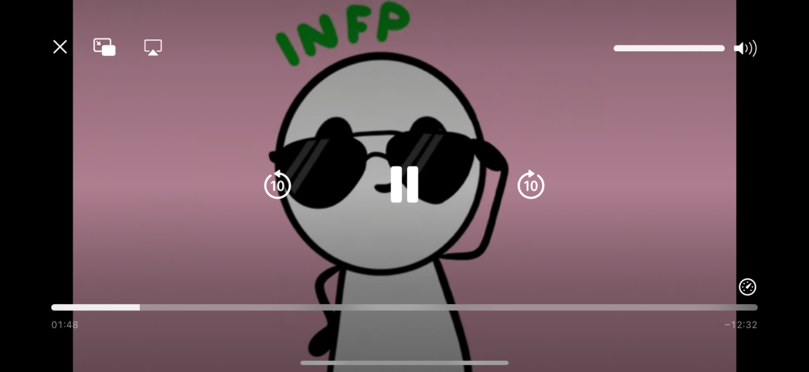
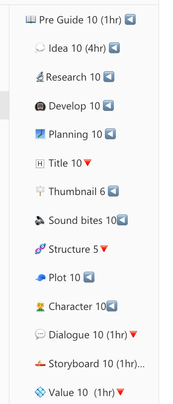
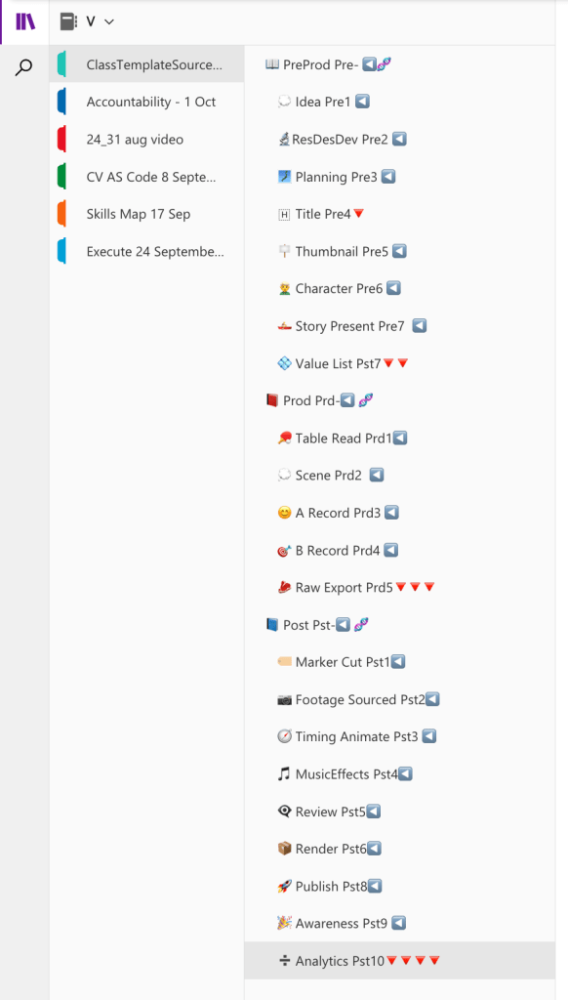

🎬 What I Learned from Benjamin Spicy on Video Production for YouTube
When diving into video production for YouTube, Benjamin's insights completely reshaped how I approach content creation. He stressed the importance of understanding the medium of storytelling, specifically how movie screenplays differ from the shorter, snappier videos that thrive on YouTube. Here's how that affected my workflow:
🎥 Invest in the Setup for Movies
In traditional movie production, setup is key. Benjamin explained that to build an engaging experience, movies invest heavily in the setup phase. This prepares the audience emotionally and intellectually for the journey. But, does this work for YouTube?
⏳ Short Videos and Minimal Setup
Not exactly! YouTube's short video format plays much better with a different structure. You can skip the heavy setup and instead focus on delivering bite-sized information. The magic lies in weaving in small story elements within a list format—capturing the audience’s attention immediately and keeping them engaged throughout without needing deep commitment.
📝 Key Takeaway: Make Research Relatable
In Erdem's videos, the long research process often loses the audience. They aren't necessarily interested in the full journey—what they crave is the climax or the output of that research. Benjamin highlighted that sharing development insights and results in a simpler list format can deliver more value to viewers, making it more relatable and digestible outputs of the development.
🔍 Actionable Tip: Break down complex research into practical, non-fictional outputs that people can immediately apply or understand. The focus should be on what’s in it for them—this leads to higher engagement and keeps the audience coming back for more.
🚀 Benjamin’s List Format in Action
2 min to share a development slide which has the events in form of a story

🎬 In Summary: What I’ve learned is that while the world of YouTube demands a different structure than traditional movies, it still allows for powerful storytelling. It’s about tweaking that structure, removing unnecessary setups, and delivering engaging, practical content. That’s the key to building a loyal audience.
Before Workflow

After

🔗 Connect with me:
Here’s the checklist, rewritten with the requested structure and emojis:
This version includes clear steps, icons for easy navigation, and a logical structure for planning and execution!
RETRO 2
Alex also watched the my video twice and he complained on the structure not being clear
mitigation > on the valueList side focus on the structure and internal 2 minute stories to deliver for the development
Imported from rifaterdemsahin.com · 2024